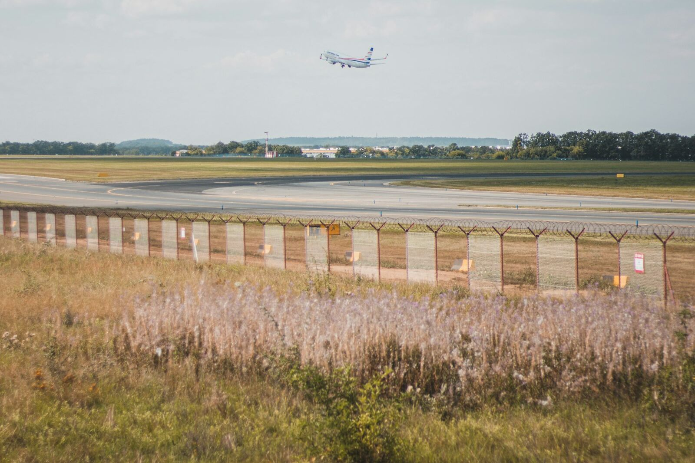

Grass, sheep and robots: it is not either-or
Agrivoltaics sheep grazing vs mowing on solar farms is not either-or. Sheep handle bulk grazing; a machine holds APZ and under-panel heights to spec.
Practical advice on autonomous mowing, grounds management, and getting the most from your Northern Rivers lifestyle property.
Agrivoltaics sheep grazing vs mowing on solar farms is not either-or. Sheep handle bulk grazing; a machine holds APZ and under-panel heights to spec.

Solar farm mowing cycle fleet sizing, worked honestly: plan on about eight acres a day per machine and size the fleet for summer growth, not winter.

Night mowing on a solar farm with an autonomous machine: RTK and LiDAR don't need daylight, cool hours suit batteries, and the site is empty.

Autonomous mower fire safety on a solar farm: no spark detection. Risk is managed with no-go zones, charger siting and no charging on fire ban days.

An autonomous mower doesn't need internet connectivity to mow. RTK positioning runs off a local base station. Signal is for alerts and remote support only.

Acreage mowing on a Northern Rivers hobby farm eats a week a month. An autonomous mower, mapped once, gives most of it back. Wet ground stays yours.

Why autonomous mowing trials fail: usually the fit and the running, not the machine. Wrong ground, babysat autonomy, no spares on site, nobody owning it.

Brisbane Airport autonomous mowing in Australia: four contained units, 919 hectares, and the airport's own estimate of a 70 percent cost cut.
Solar farm vegetation management cost is rarely a budget line. It hides in technician hours, contract risk and the skilled work that waits behind it.

Autonomous mowing capacity, honestly: plan on about eight acres a day, not the twelve on the spec sheet. Why the gap exists and what to ask any supplier.
Acreage mowing Alstonville: an RTK mower handles most plateau blocks, slopes to 30 degrees, about 8 acres a day. Residential service from Q1 2027.

Acreage mowing Myocum: an RTK mower handles sloping blocks to 30 degrees, about 8 acres a day. Fire risk managed by no-go zones, not sensors. From Q1 2027.
Acreage mowing Federal: an RTK mower handles gullies and slopes to 30 degrees, about 8 acres a day. Wet ground is mapped out, not driven. Service Q1 2027.
Acreage mowing Mullumbimby: an RTK mower handles creek flats and hillsides to 30 degrees, about 8 acres a day. Wet ground mapped out. Service from Q1 2027.
Acreage mowing in Newrybar with a commercial-grade RTK mower you own and we manage. About 8 acres a day, slopes to 30 degrees, wet ground mapped out.
Acreage mowing Ewingsdale: an RTK mower covers rolling ground to 30 degrees, about 8 acres a day. Posts and edges need a person. Service from Q1 2027.
Solar farm mowing vegetation management with an RTK mower: about 8 acres a day, slopes to 30 degrees, and 60 to 70 percent autonomous close in.
Is an autonomous mowing subscription in Byron Bay worth it? Often, on four to ten acres under 30 degrees. You buy the machine, we run it. Quoted on site.

Fortnightly mowing cost on acreage is more than the per-visit price: extra wet-season visits, surcharges, rate rises and your time. An honest comparison.
Acreage mowing Bangalow: an RTK mower handles most hinterland blocks, slopes to 30 degrees, about 8 acres a day. Edges need people. Service from Q1 2027.
Five signs your acreage mowing solution is failing on a Northern Rivers block, and what a robot mower fixes. About 8 acres a day, slopes to 30 degrees.
Steep block mowing in the Northern Rivers: a commercial-grade RTK mower mows to 30 degrees, proven. Climbing is 42, a separate number. Wet ground is out.

Council mowing in the Northern Rivers with an autonomous machine: fenced or controlled sites today, about 8 acres a day. Certification in progress.
Holiday rental property mowing in Byron Bay without a contractor: an RTK mower you own, we manage, grass cut little and often. Wet ground mapped out.

Autonomous mowing vs ride-on for acreage: a ride-on is cheaper to buy and costs you weekends. The machine costs more and plans on eight acres a day.

Acreage mowing cost in Byron Bay depends on terrain, access, grass and frequency. Contractors charge by the hour; our fee is quoted after a site visit.